Make Shotguns Great Again!
- Downloads
- 42,968
- Favourites
- 40
- Mod lists
- 86
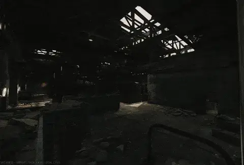
Malfunction Overhaul
-
Skip Inspection Before Clearing
- Allows players to clear a weapon malfunction immediately using the clear keybind, bypassing the requirement to visually inspect the weapon first.
-
Remove Boss Forced Malfunctions
- Prevents bosses (such as Kollontay) from triggering scripted, forced weapon malfunctions on the player’s active firearm. This ensures that jams are only caused by weapon condition or ammunition stats.
These can be adjusted in the BepInEx config (F12)
- KS-23 Optics Alignment Fix: Fixed shots landing off-reticle when using optics on the KS-23’s rail mount. Includes fine-tunable pitch/yaw correction in the BepInEx config (F12) if you want to adjust the zero further.
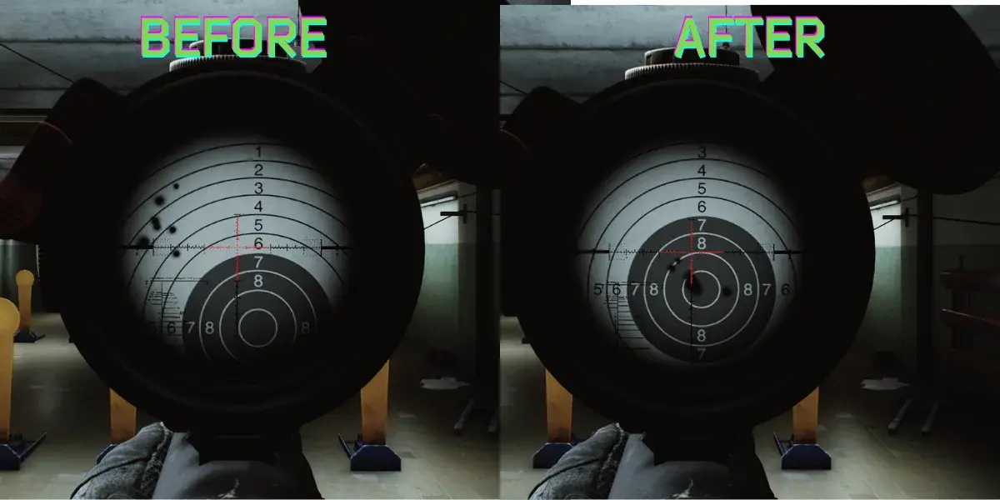
-
The Saiga12K now has a Full Auto mode. (be careful with the recoil ಠ_ಠ)Full auto version exists in the game now. -
The ETMI-019 and Kiba Arms SPRM rail mounts are now compatible with more optics and mounts.
-
The semi-automatic mode of the Benelli M3 has been slightly adjusted, similar to other semi-automatic shotguns in the game, such as the MP-155 and MP-153.
-
MP-155 Ultima handguard can be used in the MP-153.
-
AA-12 -> Increased the cyclic rate of fire to 450 RPM.
-
23x75mm Barrikada Slug: Accuracy raised from
-5to135to match others 12ga slugs. -
Now you can put the Kiba Arms SPRM rail mount and the AK GP-25 accessory kit recoil pad in the KS-23M.
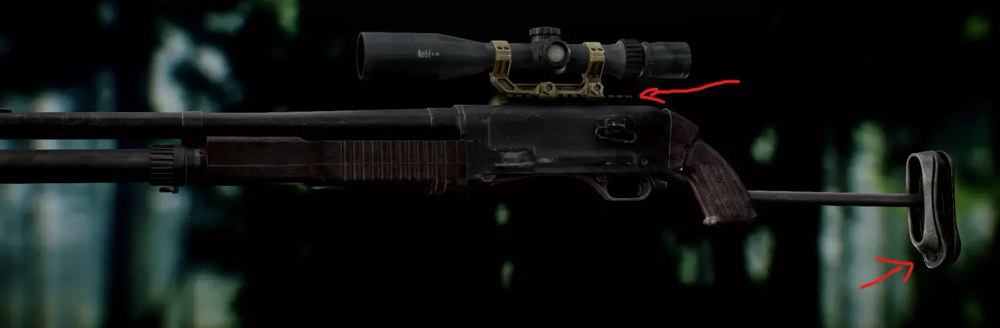
-
Now the saiga-12k can use most of the AKs handguards.
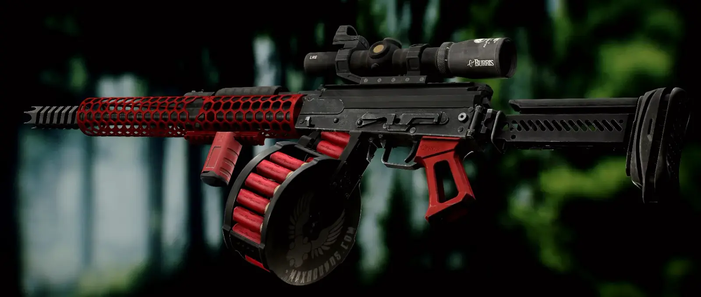
-
The ETMI-019 and Kiba Arms SPRM rail mounts can now be equipped on the MTs-255
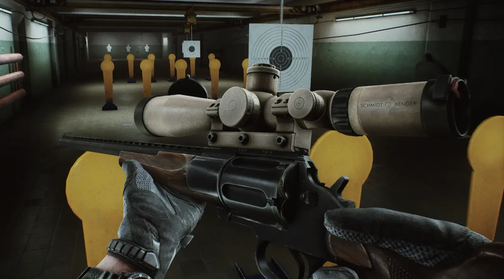
KS-23M 6-shell magazine:
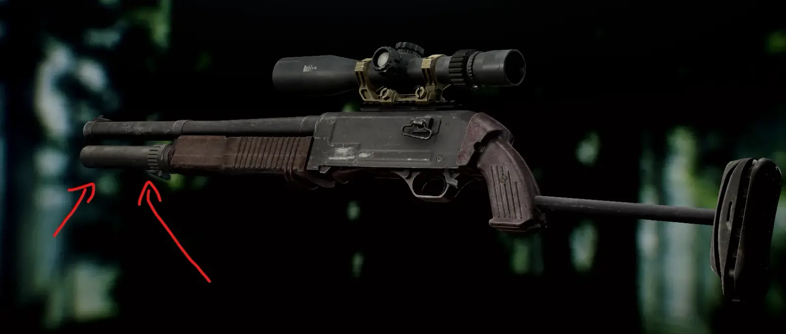
MP-153 competition 13-shell magazine:
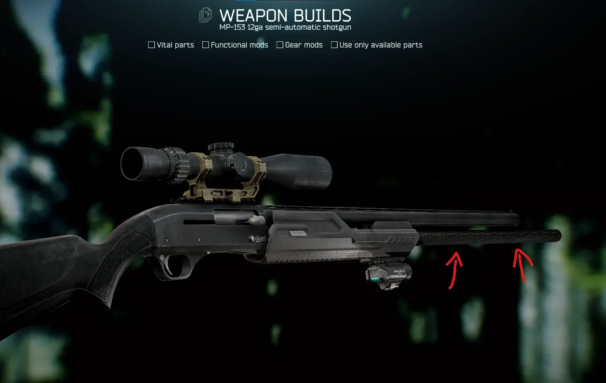
SOK-12 12/76 Alliance Armament 30-round magazine:
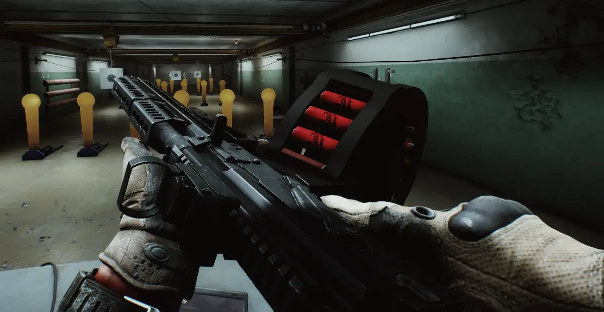
Benelli M3 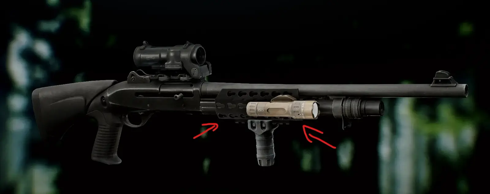M-LOK Keymod Handguard:
MP-12 Single Shot Shotgun:
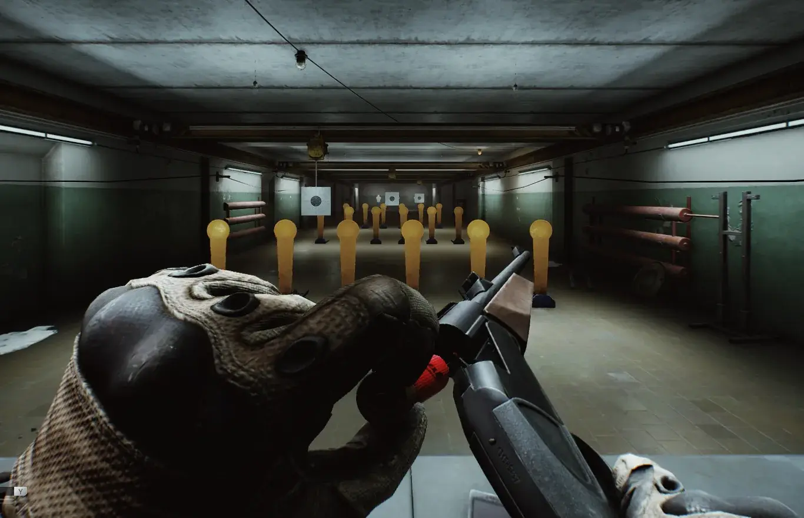
MP-700 .700 Nitro Express Double Rifle:
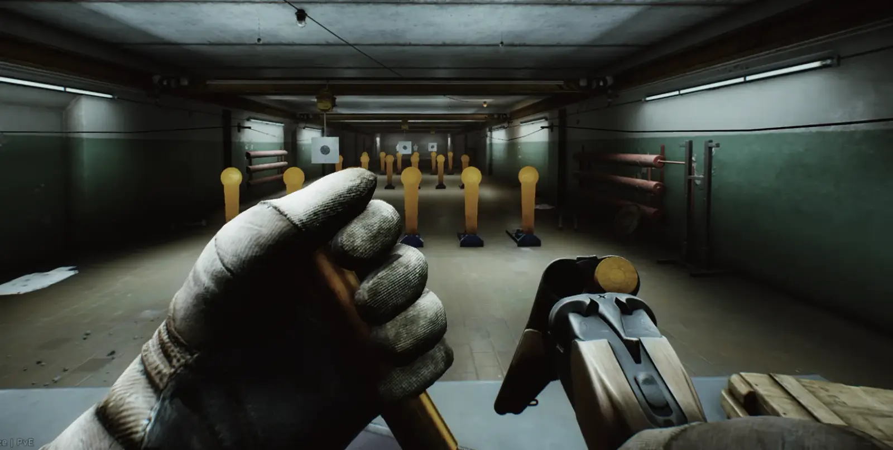
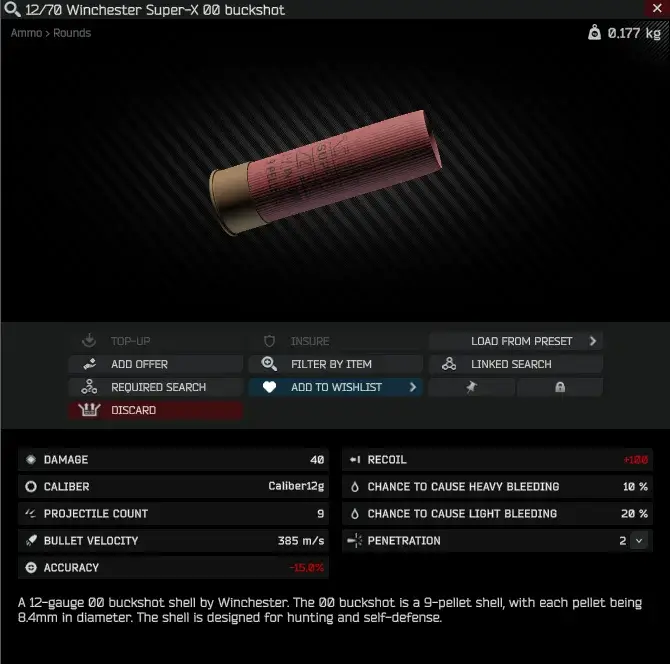
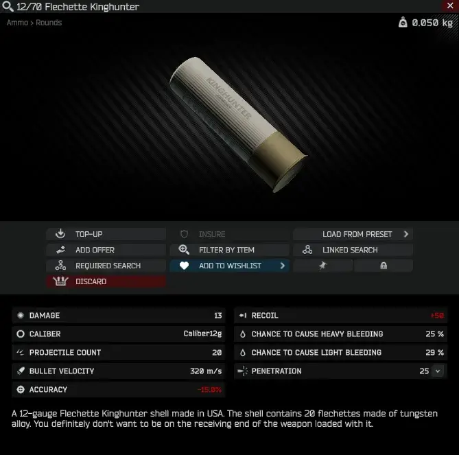
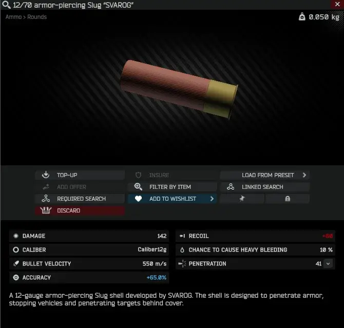
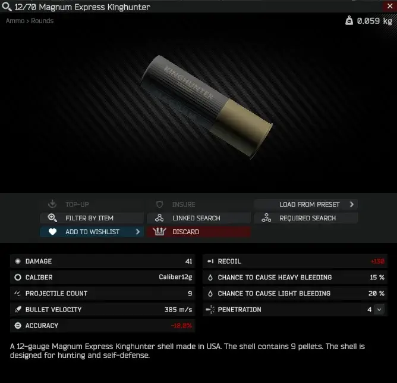
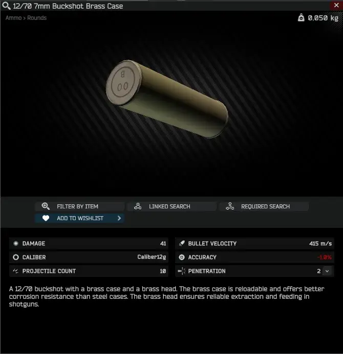
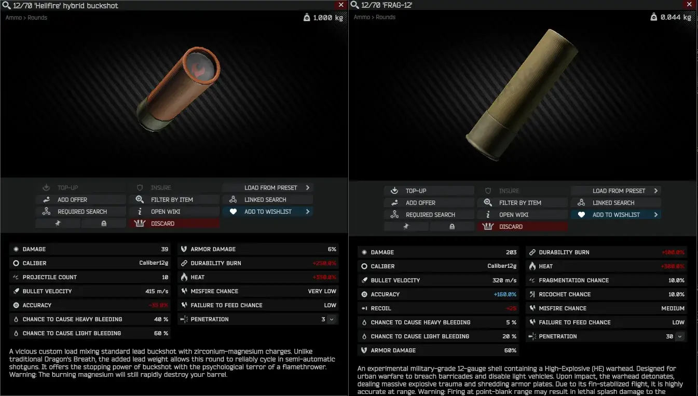
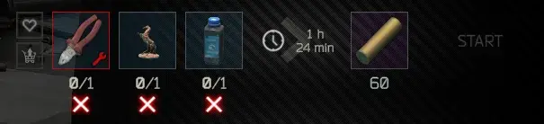 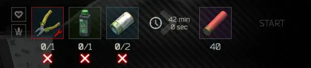 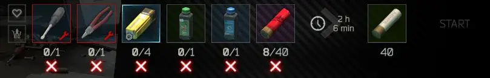 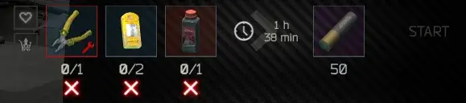 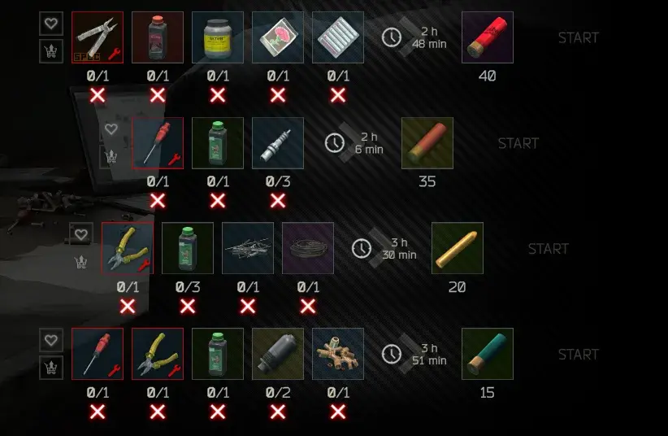

- Download the
makeshotgunsgreatagain.zip. - Drag and drop the files directly into the root folder of your SPT installation.
- The folders should merge automatically. If you get a prompt to overwrite files, say yes.
Benelli M3 Handguard by zzzs570
SOK-12 12/76 Alliance Armament 30-round magazine by HyHylie - “The Fiery Demise”
12/70 Winchester Super-X 00 Buckshot by Guy in a Poncho (@ponchoguy) - Sketchfab
12/70 Flechette, AP and Magnum express by deadcomrade - Sketchfab
Gcr357 for helping me with some models
Issues? Open one HERE

Version
1.13.2
Fixes
-
Trader Restock: Fixed shotgun shells and other mod items getting permanently stuck at “out of stock” after being bought out.
-
KS-23 Optics Zeroing: Fixed optics mounted on the KS-23’s rail shooting off-reticle (high-left) regardless of the sight used.
-
Barrikada Slug Accuracy: Raised the Barrikada slug’s accuracy stat to match the mod’s other 12ga slugs, tightening its group.
PS: Updates might come a bit slower from now on, real life keeps me busy, but I’m still here and reading every report. Thanks for your patience!
Dependencies
Version
1.13.1
Hotfix:
Resolved WTT-Commonlib version mismatch
Remember do NOT report issues in the comments. Report them HERE
Dependencies
Version
1.13.0
Custom Ammo Models & AA-12 Tweaks
You will need to clean you temp files in the SPT launcer in the button Clean Temp Files
Visual Updates
- Custom 3D Models: Added dedicated, custom 3D models for both the 12/70 Dragon’s Breath and 12/70 FRAG-12 cartridges.
Weapon Rebalance
- AA-12 Recoil Adjustment: Slightly reduced the base recoil of the AA-12 shotgun. Combined with the previously increased rate of fire, this tweak provides better controllability during sustained full-auto fire.
Important: Please make sure to clear your cache. You can do this by clicking the ‘Clean Temp Files’ button in the SPT Launcher settings.
Dependencies
Version
1.12.0
Update: FRAG-12 & Hideout Integration
New Content
- New Ammunition (12/70 FRAG-12): Introduced the devastating FRAG-12 High-Explosive round. Delivers massive damage and a localized blast radius upon impact. Use with caution in close quarters.
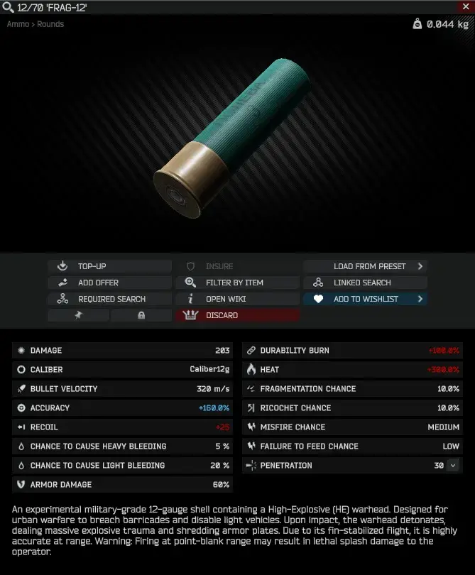
Hideout Integration
- Custom Ammo Crafting: Added new Workbench recipes for all custom ammunition introduced by this mod (including Dragon’s Breath and the new FRAG-12). You can now sustain your exotic ammo supply off-raid.
Weapon Tweaks
- AA-12 Rebalance: Increased the cyclic rate of fire to 450 RPM. It now functions as a proper room-clearing tool.
Dependencies
Version
1.11.1
Dragon’s Breath Customization & Performance
New Content: 12/70 Dragon’s Breath Configs
This update grants full control over the 12/70 ‘Hellfire’ hybrid buckshot visual effects. You can now fine-tune the balance between visual fidelity and hardware performance directly via the BepInEx menu (F12).
Performance & Visual Toggles
- Dynamic Particle Budget: Adjust
Max ParticlesandParticles Per Shotto prevent frame drops during intense firefights. - Feature Toggles: Enable or disable Trails, Collisions (Ricochet), and Dynamic Lights individually.
- Behavioral Tuning: * Air Resistance: Control how much particles slow down over time (for a more “cloud-like” effect).
- Turbulence: Adjust
Noise StrengthandFrequencyfor erratic spark movement. - Spread Angle: Modify the width of the fire cone.
- Turbulence: Adjust
This mod is CPU-bound. If you have an older CPU like mine (Xeon E5-2697A V4), you will lose about 10-15 FPS in full-auto, and 1-3 FPS in semi-auto. However, if you have a newer CPU like the Ryzen 7 5700G (Thanks to Gcr357), you will only lose around 3-5 FPS in full-auto, and the drop in semi-auto is barely noticeable.
The effect prefab is now rebuilt in real-time whenever a setting is changed in the F12 menu. No game restart is required to see your changes.
Tagilla has a small chance to use the 12/70 ‘Hellfire’ hybrid buckshot
- Requires WTT-CommonLib
Dependencies
Version
1.11.0
Dragon’s Breath Update
New Content: 12/70 Dragon’s Breath
This update introduces a new custom ammunition type: 12/70 ‘Hellfire’ hybrid buckshot.
- Visual FX: Features a custom procedural particle system. This renders high-fidelity visual effects including a massive muzzle flash, sparks, and lingering trails.
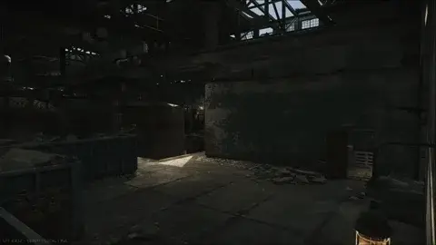
Special thanks to jankytheclown HollywoodFX mod, whose work served as the base for the particle effects code.
- Hybrid Ballistics: Unlike standard incendiary rounds, this custom load mixes magnesium shards with lead buckshot. While this added mass allows the round to cycle in semi-automatic shotguns, the crude nature of the mixture means feeding failures and jams remain a significant risk compared to factory standard ammunition.
- Balancing:
- Extreme Heat: Generates significantly more heat than standard buckshot. Rapid fire will quickly overheat and jam the weapon.
- Durability Burn: The burning magnesium will degrade weapon durability much faster than standard ammo.
Quality of Life & Mechanics
New configuration options have been added to improve combat flow and handling of weapon malfunctions. These can be adjusted in the BepInEx config (F12).
Malfunction Overhaul
-
Skip Inspection Before Clearing
- Allows players to clear a weapon malfunction immediately using the clear keybind, bypassing the requirement to visually inspect the weapon first.
-
Remove Boss Forced Malfunctions
- Prevents bosses (such as Kollontay) from triggering scripted, forced weapon malfunctions on the player’s active firearm. This ensures that jams are only caused by weapon condition or ammunition stats.
Requires WTT-CommonLib
Remember do NOT report issues in the comments. Report them HERE
Dependencies
Version
1.10.0
What’s new?
- Fixed the RIGHT RAIL rotation on the M3 handguard.
- The ETMI-019 and Kiba Arms SPRM rail mounts are now compatible with more optics and mounts.
- Added support for the MP-155 Ultima handguard on the MP-153.
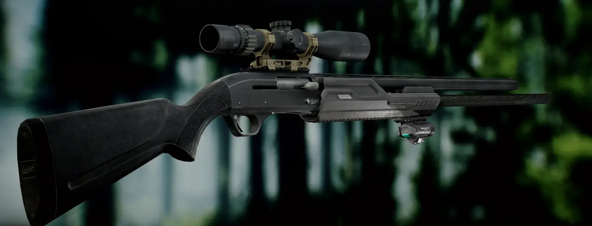
- The ETMI-019 and Kiba Arms SPRM rail mounts can now be equipped on the MTs-255:
Requires WTT-CommonLib
Dependencies
Version
1.9.0
What’s new?
- Changed some cartridges stats (Thanks Greev)
- Added to Jaeger LL1 and LL2 the MP-12 and MP-700 Nitro Express presets to buy
- bots will spawn with these weapons (i think)
Requires the WTT-CommonLib
Dependencies
Version
1.8.0
4.0 UPDATE
- Now requires the WTT-CommonLib
- If you find any issue, please let me know.
Dependencies
Version
1.7.0
Make Shotguns Great Again! v1.7.0
“New” Weapon
- MP-700 sawed-off > Jaeger LL4
Note: Be careful! Firing this beast, especially in double-tap mode, now has a chance to cause some effects to you. Can be changed in the bepInEx menu.
Balance Changes
- Increased the damage of the .700 Nitro Express FMJ
- Increased the recoil of the MP-700 and variants
Fixes
- Removed some unused IDs (thanks Hardiel)
Version
1.6.0
Make Shotguns Great Again! v1.6.0
3.11 Update
- Nothing new, code rewrite
- A huge thanks to the WTT Team for providing the WTT-BundleMaster tool!
Version
1.2.3
Updated for SPT 3.10
Version
1.2.1
3.9 UPDATE
Only this. I think this will work.